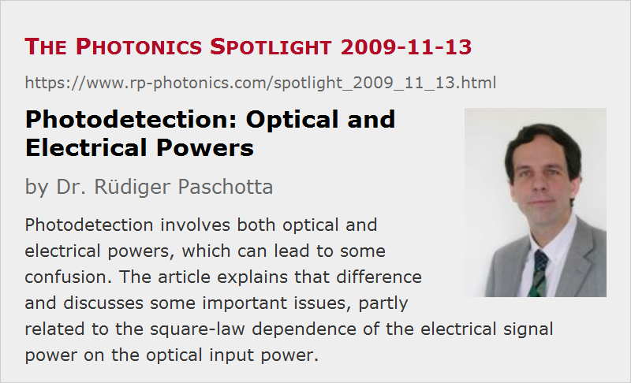

Photodetection: Optical and Electrical Powers
Posted on 2009-11-13 as a part of the Photonics Spotlight (available as e-mail newsletter!)
Permanent link: https://www.rp-photonics.com/spotlight_2009_11_13.html
Author: Dr. Rüdiger Paschotta, RP Photonics Consulting GmbH
Abstract: Photodetection involves both optical and electrical powers, which can lead to some confusion. The article explains that difference and discusses some important issues, partly related to the square-law dependence of the electrical signal power on the optical input power.

Ref.: encyclopedia articles on photodiodes, free-space optical communications, and shot noise
In the context of photodetection, there is frequently some confusion concerning what is the detected power:
- There is an optical power impinging the detector (for example, a photodiode). Of course, this is related to the number of photons received per second.
- There is an electrical power related to the photocurrent.
Concerning the latter, things are less obvious for two reasons, discussed in the following.
What is the Power of the Photocurrent?
When it is sent into some load resistor R, the power is P = R I2, but it is not always easy to identify some load resistor in the electric circuit, if it is a current amplifier (transimpedance amplifier), for example. That problem, however, may not be severe, as we are often interested in ratios of powers (for example, a signal-to-noise ratio), for which the magnitude of R does not matter. It often cancels out in the equations before we need to specify a value. In other cases, one may consider the power after some amplifier circuit.
In systems with a real load resistor, functioning as a current-to-voltage converter, one can increase the electrical signal power for a given photocurrent simply by increasing the magnitude of R. How does that affect thermal noise? Not at all: the variance of the thermal noise current is inversely proportional to R, and the related power is independent of R. So the signal-to-noise ratio clearly becomes better for increasing R, if thermal noise is the limiting effect. However, the detection bandwidth will usually go down. Fast detection requires a smaller load resistor, and this decreases the sensitivity and the signal-to-noise ratio.
The Square Law Relationship
The power of the photocurrent is proportional to the square of the photocurrent and thus to the square of the optical power. This is confusing for many beginners.
As an example, consider a system for long-distance free-space optical communications. For some distance between transmitter and receiver, you achieve a certain signal-to-noise ratio. How does that change when you double the distance?
- Assuming that we are in the regime of large distances and low absorption and scattering, the optical power incident on the detector will go down by a factor of 4. This is simply because the transmitted power is spreading over a larger and larger area, which is well above that of your receiver.
- If the photocurrent is reduced by a factor of 4, its power goes down by a factor of 16. This means that your received electrical power is decreased by 12 dB. Forgetting about that square-law dependence, many may have expected 6 dB only.
- How about the signal-to-noise ratio? I suppose that some would be quick to suggest either 6 dB or 12 dB here. However, the answer depends on what dominates the noise. If the noise arises from thermal noise in the electronics, for example, the noise level will not change as the signal becomes weaker, and we lose 12 dB. If, however, we are limited by shot noise, the shot noise power (which is proportional to the received power) goes down by 6 dB. Therefore, the signal-to-noise ratio is then reduced only by 6 dB.
These issues are not entirely straight-forward. Nevertheless, one can learn that, and for many technical projects, this can be vital – beginning already in the planning phase. Building such detection device before knowing the possible signal-to-noise ratio can easily be a waste of time, as every experiment will take much longer than a proper calculation.
The easy way to learn such things (possibly with far greater depth of detail) is to hire me for a training course at your location.
This article is a posting of the Photonics Spotlight, authored by Dr. Rüdiger Paschotta. You may link to this page and cite it, because its location is permanent. See also the RP Photonics Encyclopedia.
Note that you can also receive the articles in the form of a newsletter or with an RSS feed.
Questions and Comments from Users
Here you can submit questions and comments. As far as they get accepted by the author, they will appear above this paragraph together with the author’s answer. The author will decide on acceptance based on certain criteria. Essentially, the issue must be of sufficiently broad interest.
Please do not enter personal data here; we would otherwise delete it soon. (See also our privacy declaration.) If you wish to receive personal feedback or consultancy from the author, please contact him e.g. via e-mail.
By submitting the information, you give your consent to the potential publication of your inputs on our website according to our rules. (If you later retract your consent, we will delete those inputs.) As your inputs are first reviewed by the author, they may be published with some delay.
|  |
If you like this page, please share the link with your friends and colleagues, e.g. via social media:
These sharing buttons are implemented in a privacy-friendly way!